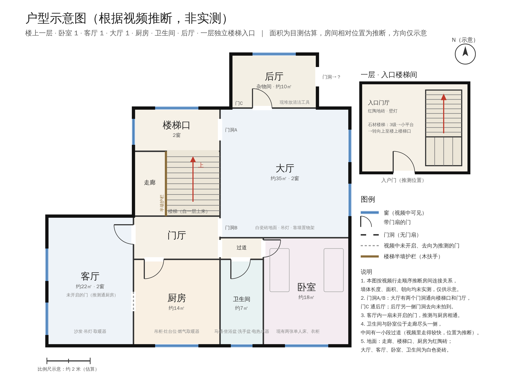
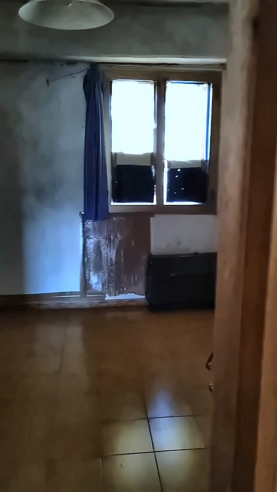
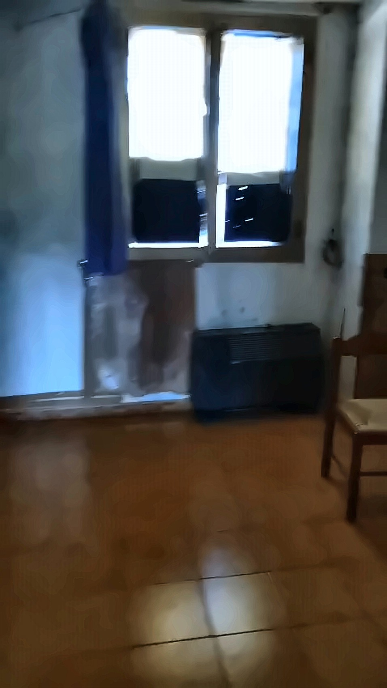
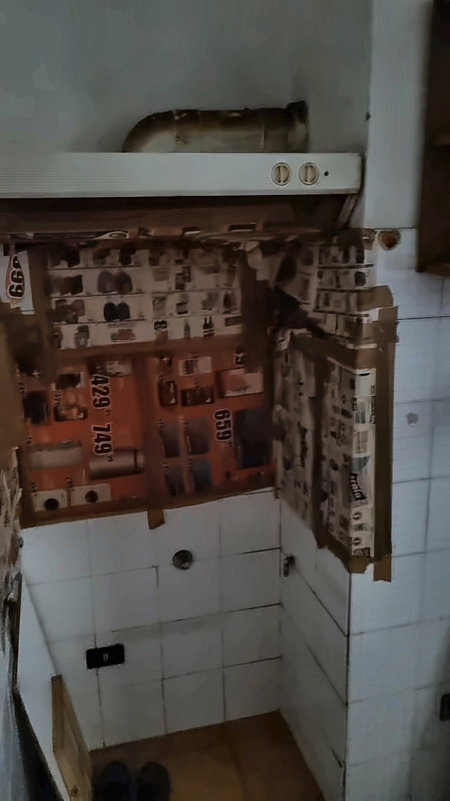
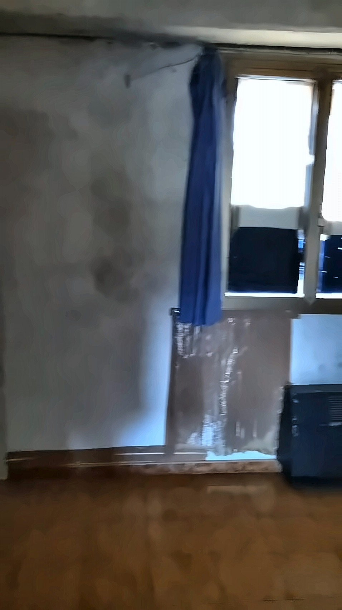

户型示意图
根据看房视频行走顺序推断，墙体尺寸和面积为目测估算，仅供示意。下载可编辑 SVG
{kind=link}

房间一览
入口楼梯间一层独立入口，红陶地砖门厅，石材楼梯配木质扶手和磨砂玻璃护板；先上 3 级到小平台，再转向上到楼上。楼梯顶端有采光窗。
楼梯口与走廊楼上楼梯口有两扇窗，红陶地砖。走廊沿楼梯半墙护栏通向厨房门，途中有门洞通大厅，尽头右侧是客厅门。
厨房双开窗配蓝色窗帘，窗下有燃气取暖器。靠墙吊柜、白瓷砖灶台墙面，抽油烟机位已预留（现贴着报纸）。红陶地砖。另有一扇未开启的门。
客厅两扇窗，配吊灯与取暖器，白色瓷砖地面。现有沙发、小桌和椅子。有一扇未开启的木门，推测通厨房。
大厅面积最大的一间，白色瓷砖地面，两扇窗配深色窗帘，两盏吊灯，靠墙置物架。有两个门洞分别通楼梯口和门厅，北墙木门通后厅。
后厅大厅北墙木门之后的小空间，浅色瓷砖，现堆放清洁工具。另一侧还有一个门洞，视频中未拍到去向。
卫生间白瓷砖到顶，马桶、坐浴盆、立柱洗手盆齐全，配电热水器。有窗（现用布遮挡），有晾衣架。
卧室现有两张单人床、书桌椅和床头柜，木窗配百叶卷帘，一侧有衣柜。墙面有明显水渍霉斑，建议出租前处理。
入口楼梯间
一层独立入口，红陶地砖门厅，石材楼梯配木质扶手和磨砂玻璃护板；先上 3 级到小平台，再转向上到楼上。楼梯顶端有采光窗。
{kind=link}
{kind=link}
{kind=link}
楼梯口与走廊
楼上楼梯口有两扇窗，红陶地砖。走廊沿楼梯半墙护栏通向厨房门，途中有门洞通大厅，尽头右侧是客厅门。
{kind=link}
{kind=link}
{kind=link}
厨房
双开窗配蓝色窗帘，窗下有燃气取暖器。靠墙吊柜、白瓷砖灶台墙面，抽油烟机位已预留（现贴着报纸）。红陶地砖。另有一扇未开启的门。
{kind=link}

{kind=link}

{kind=link}

{kind=link}

客厅
两扇窗，配吊灯与取暖器，白色瓷砖地面。现有沙发、小桌和椅子。有一扇未开启的木门，推测通厨房。
{kind=link}
{kind=link}
{kind=link}
大厅
面积最大的一间，白色瓷砖地面，两扇窗配深色窗帘，两盏吊灯，靠墙置物架。有两个门洞分别通楼梯口和门厅，北墙木门通后厅。
{kind=link}
{kind=link}
{kind=link}
后厅
大厅北墙木门之后的小空间，浅色瓷砖，现堆放清洁工具。另一侧还有一个门洞，视频中未拍到去向。


卫生间
白瓷砖到顶，马桶、坐浴盆、立柱洗手盆齐全，配电热水器。有窗（现用布遮挡），有晾衣架。
{kind=link}
{kind=link}
{kind=link}
卧室
现有两张单人床、书桌椅和床头柜，木窗配百叶卷帘，一侧有衣柜。墙面有明显水渍霉斑，建议出租前处理。
{kind=link}
{kind=link}
{kind=link}
图片均截取自看房视频（原始分辨率 478×850），仅做了轻度处理：降噪、温和的白平衡与暗部提亮、2 倍超分辨率、轻微锐化。没有添加、删除或改动任何家具与房屋结构，墙面水渍等现状均保留。